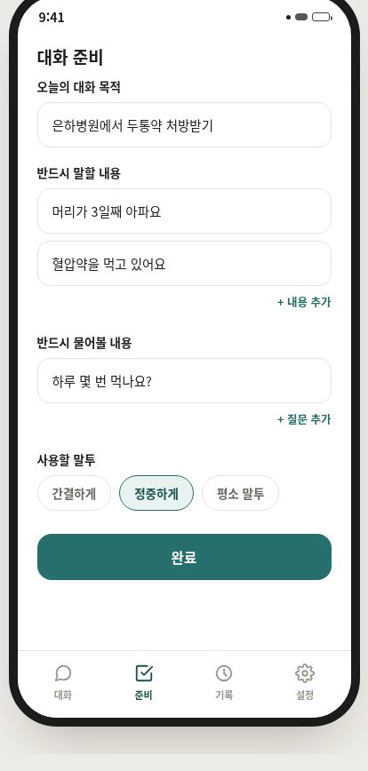
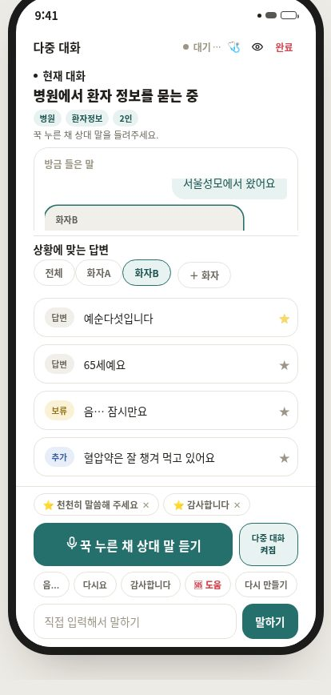
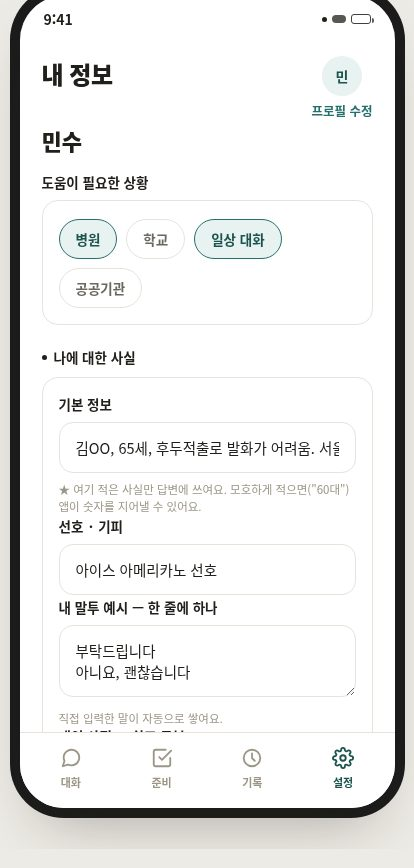
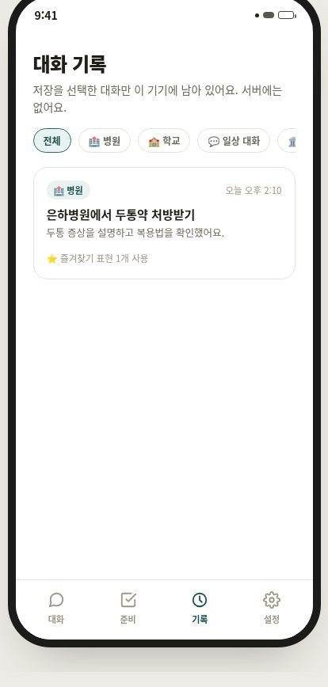
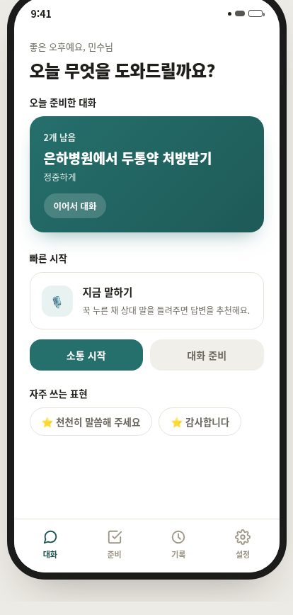

개화 — 말이 어려운 사람의 다음 한 마디를 만드는 AAC
상대의 말을 듣고 지금 할 수 있는 답 네 개를 만들어, 손가락 한 번으로 대신 말해 주는 발화보조 앱
실사용자 인터뷰로 문제를 정의하고, 사용자를 부르는 방식을 바꿔 필요한 기능 자체를 다시 정한다.
- 국내 소통 약자는 72만 명이고, 상대가 내 뜻을 모두 이해한 '완전한 의사소통'의 실패율은 62%입니다.
- 기존 AAC는 준비한 문장과 다른 질문이 오면 처음부터 다시 입력해야 했습니다. 채팅 기반으로 바꿔 매 턴 맥락에 맞는 문장을 제안하게 했습니다.
- 타깃을 '도움받는 참여자'가 아니라 대화의 흐름을 함께 만드는 사람으로 다시 정의하자, 필요한 기능이 '표현 보조'에서 '속도 회복'으로 바뀌었습니다.






문제
기존 AAC는 사용자가 문장을 미리 등록해 두고 찾아서 누르는 방식입니다. 준비한 문장과 다른 질문이 오면 처음부터 다시 입력해야 하고, 고르는 동안 대화는 다음 주제로 넘어가 있습니다. 개화는 반대로 갑니다 — 지금 이 대화를 듣고 지금 필요한 문장을 만듭니다. 그러자 전혀 다른 문제가 생겼습니다. 만들어 낸 문장이 사용자의 사실과 어긋날 수 있다는 것입니다.
접근
- 상대의 말을 받아 답변 · 보류 · 추가 질문 같은 후보 네 개를 만들고, 사용자가 하나를 눌러야만 소리가 납니다. 앱이 먼저 말하는 일은 없습니다.
- 인접쌍(adjacency pair) 이론을 생성 규칙으로 옮겼습니다. 상대가 질문했으면 답변 · 보류 · 추가 질문을 만들고, 제안했을 때만 거절 슬롯을 엽니다.
- 목소리 지문으로 화자를 구분해 화자A · 화자B로 표시하고, 대화가 끝나면 지문을 지웁니다.
- 버튼을 누르기 전 3초를 링버퍼에 담아 두고(프리롤), 누르는 순간 그 3초부터 소급해 인식합니다. 말이 시작된 뒤에 눌러도 앞부분이 잘리지 않습니다.
- 후보를 먼저 내보내고 상황 요약을 뒤로 미뤄, 첫 후보가 뜨기까지를
239ms로 줄였습니다.
결과
상대의 말을 듣고 후보를 만들어 대신 말해 주는 파이프라인을 완성하고 라이브 데모로 시연했습니다. 사용자 정보와 어긋나는 후보를 28% → 0%로 없앴고, 첫 후보 지연을 239ms까지 줄였으며, 음성 인식 · 생성 · 화자 분리를 전부 기기 안에서 돌렸습니다.
이 프로젝트에서 제가 한 것
- 상황 인지 → 맥락 이해 → 답변 생성으로 이어지는 파이프라인 구현
- 캘린더 일정을 대화 맥락으로 주입하는 흐름 구현
- 채팅 기반 MVP를 라이브 데모가 가능한 상태까지
기술 선택과 판단 근거
왜 그 방법을 택했는지, 무엇을 택하지 않았는지 적었습니다.
"다양하게 만들어라"는 지시를 걷어내고 대화 구조로 바꿨다
후보를 다양하게 만들라고 시키면 모델은 없는 얘기를 지어내서라도 다양하게 만듭니다. 사실 질문에까지 거절 슬롯을 강제한 것이 원인이었습니다. 질문에는 거절할 것이 없는데 자리를 비워 둘 수 없으니 사실을 뒤집어 채운 것입니다. 지시 대신 인접쌍 규칙으로 바꾸자 모순이 사라졌습니다.
큰 모델을 쓰지 않았다
골든셋에서 SKT A.X 4.0 Light 7B가 97.4%, 더 큰 kanana 8B가 52.8%였습니다. 파라미터가 많다고 지시를 더 잘 따르지 않았습니다. 해야 할 일로 골랐습니다.
외부 API를 하나도 쓰지 않았다
AAC 사용자의 대화에는 병명 · 복용약 · 재정처럼 가장 사적인 정보가 섞입니다. 성능을 조금 내주더라도 기기 밖으로 나가지 않는 구조를 택했습니다.
막혔던 지점과 해결
앱이 사용자 대신 거짓말을 할 뻔했다
사용자 프로필에 "혈압약을 먹고 있음"이 들어 있는데, 간호사가 "드시는 약 있으세요?"라고 묻자 후보에 "저는 약 안 먹어요"가 같이 떴습니다. 사용자가 그걸 누르면 의사에게 거짓말을 하게 됩니다. 세어 보니 18번 중 5번(28%)에 이런 모순이 섞여 있었습니다. 원인은 모델이 아니라 저희가 준 지시였습니다. 후보를 다양하게 만들라며 사실 질문에도 거절 슬롯을 강제했고, 질문에는 거절할 것이 없으니 모델이 그 자리를 채우려고 사실을 뒤집었습니다. 대화 분석의 인접쌍 이론대로 질문에는 답변 · 보류 · 추가 질문만, 제안에만 거절을 두자 0%가 됐습니다.
골든셋 98%가 통과하는 동안 28%의 모순이 무검출로 샜다
평가셋 점수는 98%였습니다. 그런데 그 98%는 모순을 아예 채점하지 않고 있었습니다. 후보 개수 · 거절권 슬롯 · 말투 · 응답 속도는 봤지만 "이 답이 사용자의 사실과 맞는가"는 항목에 없었습니다. 프로필 모순 0건을 채점 항목으로 넣고 나서야 28%가 드러났습니다. 지금은 이것이 이 평가셋의 유일한 안전 검사입니다.
가장 기본적인 답변인 "네"를 코드가 막고 있었다
후보 필터에 len(text) < 2 조건이 있었습니다. 짧은 쓰레기 출력을 막으려던 것인데, "네"는 AAC에서 가장 많이 쓰는 답변입니다. 골든셋 98%는 이걸 잡지 못했고, 단위 테스트를 쓰기 시작한 지 1분 만에 걸렸습니다.
프리롤이 조용히 0이었다
버튼을 누르기 전 3초를 담아 두는 링버퍼가 ringOn=true로 켜져 있다고 표시되는데 실제로는 소리가 담기지 않았습니다. 페이지를 열면 AudioContext가 잠든 상태로 시작하기 때문이었습니다. 브라우저 쪽 동작이라 서버 테스트로는 잡을 수 없었습니다.
직무와의 연결
- 고객 분석 · 마케팅 — 실사용자 FGI로 문제를 직접 정의하고 거기서 기능을 도출했습니다. 정량 지표만으로 안 보이는 것을 찾는 방법입니다.
- 디지털 · 데이터 — LLM 응답 생성, 다중 화자 인식, 캘린더 맥락 주입까지 파이프라인 전 구간의 개발에 참여했습니다.
- 금융 접근성 — 표현과 전달에 제약이 있는 사용자를 위한 설계입니다. 고령층 · 장애인 금융 접근성 개선과 같은 문제의식입니다.
더 자세히
관심 있는 항목만 펼쳐 보세요.
이 프로젝트가 시작된 배경
병원에 간 후두적출 환자에게 간호사가 묻습니다 — "어디가 불편해서 오셨어요?" 머릿속엔 답이 있는데 입이 안 움직입니다. 종이에 쓰려면 1분이 걸리고, 그 사이 간호사는 다른 일을 하러 갑니다. 국내 소통 약자는 72만 명이고, 상대가 본인의 의사를 모두 이해했다고 응답한 '완전한 의사소통'의 실패율은 62%입니다.
기술 판단 더 보기 1
타깃을 '도움받는 사람'이 아니라 '대화를 함께 만드는 사람'으로 다시 정의했다
배려받는 참여자가 아니라 동등한 위치의 대화자로 관점을 바꾸자, 필요한 기능이 '표현 보조'에서 '속도 회복'으로 바뀌었습니다.
데이터
회고
모델이 거짓말을 했을 때 처음에는 모델을 의심했습니다. 그런데 원인은 저희가 준 지시가 거짓말을 요구하고 있었던 것이었습니다. "다양하게 만들어라"는 말이 사실 질문에까지 거절 선택지를 강제했고, 모델은 빈자리를 채우려고 사실을 뒤집었습니다.
그리고 평가셋 98%를 믿고 있었는데, 그 98%가 모순을 채점하지 않고 있었습니다. 점수를 보기 전에 무엇을 채점하는지부터 봐야 한다는 것을 여기서 배웠습니다.